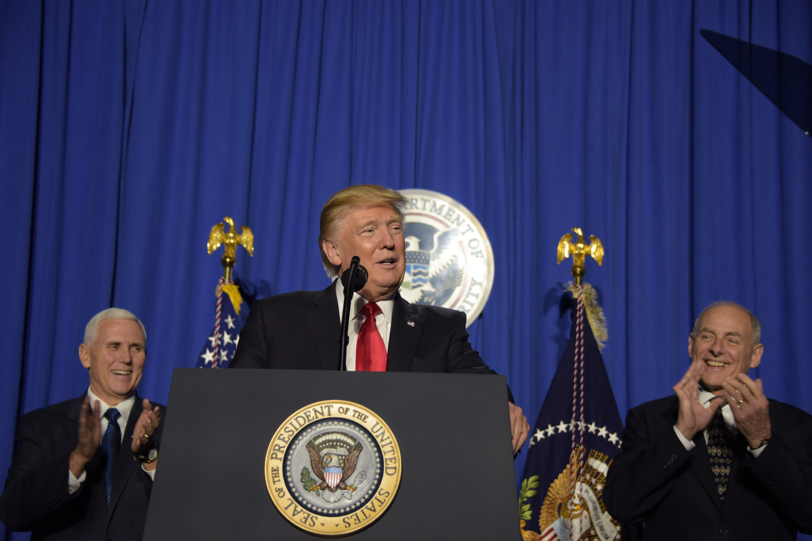
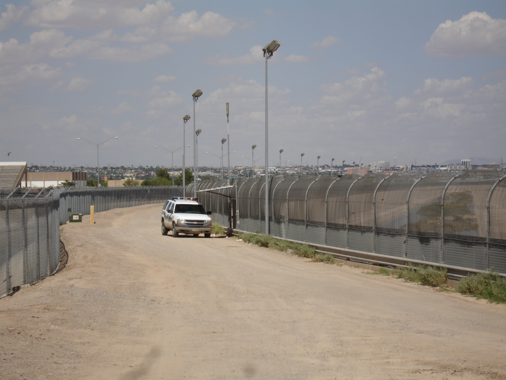

President Donald Trump today signed a new executive order placing a 90-ban on individuals from six majority-Muslim countries entering the United States. The order, which includes a 120-day ban on all refugees, will come into effect on 16th March. The executive order replaces the initial controversial travel which President Trump instituted via executive order.

President Trump Signs New Travel Ban
Today, President Donald Trump signed a new travel ban, an executive order entitled “Presidential Executive Order on Protecting the Nation from Foreign Terrorist Entry into the United States”. The new order comes into effect on 16th March and replaces the initial, controversial ban which was blocked in the courts after protests across the country and confusion over implementation at airports.

Trump Administration Unveils Two New Immigration Memos
On Tuesday, the Trump administration unveiled two new memos which broaden the ways in which federal immigration laws should be enforced, potentially laying the groundwork for millions of deportations to Mexico. The memos, issued by the Department of Homeland Security (DHS), detail a range of directives which focus on interior enforcement as well as strengthening security along the US-Mexico border.
Britain Puts Limit on Unaccompanied Minors
Britain’s government has placed a limit on the number of lone child refugees it will accept into the country, citing fears that people-traffickers are exploiting the system. 350 children will be allowed in under the Dubs Amendment— far fewer than the 3,000 originally expected under the law that had been aimed at helping some of the tens of thousands of unaccompanied migrant children across Europe.
For weekly updates and breaking news delivered straight to your inbox, sign up to our newsletter:
For even more content, please subscribe for just £5 per month: